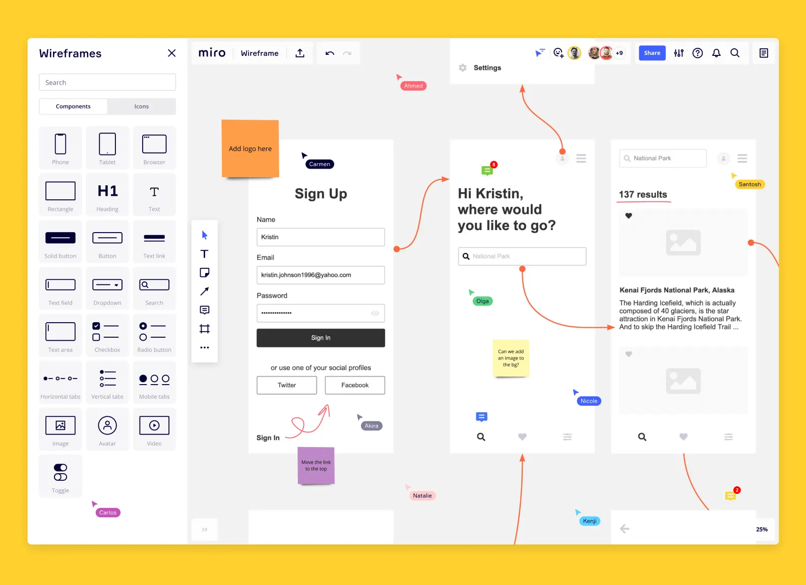
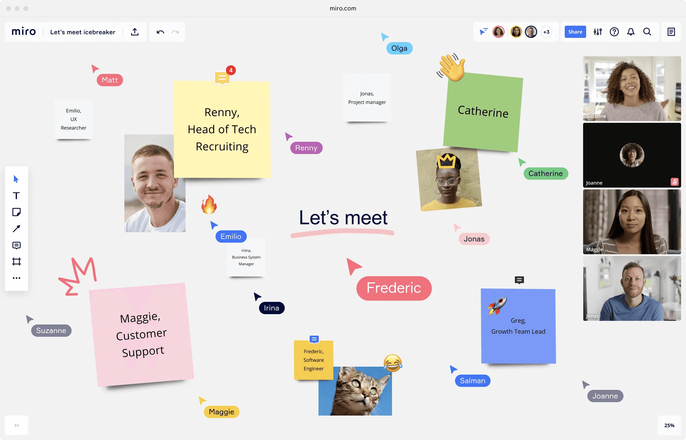
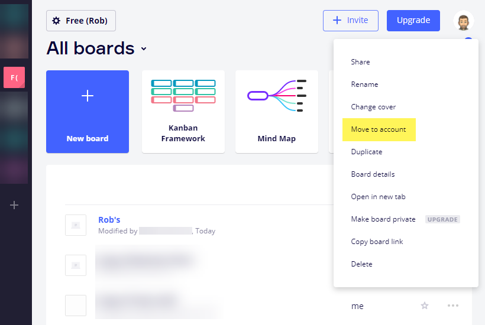
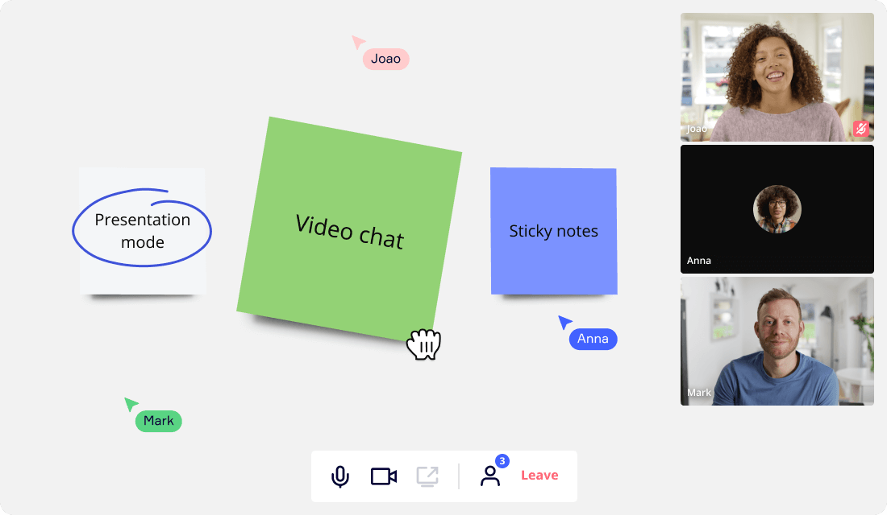
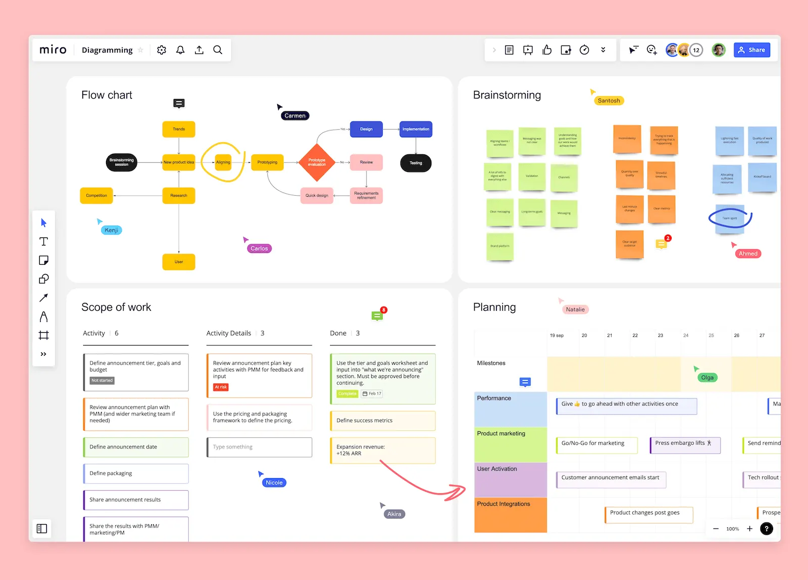
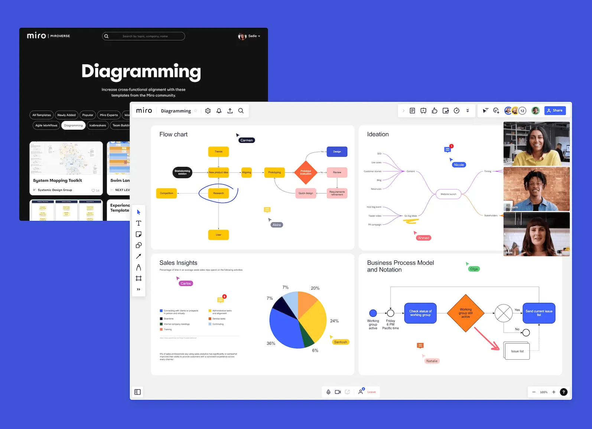
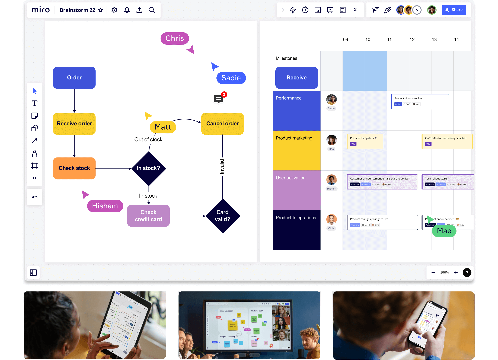

SHORT ON TIME? HERE’S A QUICK SUMMARY
Miro is an excellent option to consider if you need a robust online whiteboard platform with advanced project management tools. Everything that can be done on a traditional whiteboard can also be done in Miro. This makes it an essential tool for teams that need to work together and be creative while working remotely or in a hybrid setting. Miro's real-time collaboration and wide range of templates, pre-built elements, and integrations make it easy for freelancers and teams to visually plan, brainstorm, and organize their ideas. What makes this platform unique among other digital whiteboards is the way it incorporates diagramming, flowchart, and mind mapping tools into a single, user-friendly interface. With its many features and low learning curve, Miro is a great asset to any project manager's arsenal.
Miro is an excellent option to consider if you need a robust online whiteboard platform with advanced project management tools. Everything that can be done on a traditional whiteboard can also be done in Miro. This makes it an essential tool for teams that need to work together and be creative while working remotely or in a hybrid setting. Miro's real-time collaboration and wide range of templates, pre-built elements, and integrations make it easy for freelancers and teams to visually plan, brainstorm, and organize their ideas. What makes this platform unique among other digital whiteboards is the way it incorporates diagramming, flowchart, and mind mapping tools into a single, user-friendly interface. With its many features and low learning curve, Miro is a great asset to any project manager's arsenal.

👍 PROS:
- Excellent tools for teamwork and presentations
- Full-featured but easy to use
- Strong support for integrating with other apps and services
- Ideal for remote brainstorming and idea generation
- Swimlanes and flowcharting features
- Great for visualizing and tracking projects
- A vast library of templates and pre-built shapes
- Smooth and intuitive interface
- Flexible, adaptable, and scalable
- Comprehensive training video library
👎 CONS:
- Lacks some offline functionalities
- Opening an overpopulated board can be a tad slow
- Limited exporting options
Get Monday.com - Improve Your Productivity!
SEE WHAT USERS HAVE TO SAY
"I have started using this to make models and matrixes in school for assignments and presentations (marketing management), and it has been very helpful. We use it in our study group (one person has a consultant plan), and we just sit together and make the models on one computer altogether. The best tool to make these kinds of models I have ever used!"
"Miro is a fantastic tool, particularly in the remote working world. The support we receive is second to none, and the team there are always willing to help. The ability to create workflows, team off-sites, retros and agile roadmaps is seamless. You no longer need to all meet in a room, and you can do it right through the online functionality - the possibilities are endless!"
"Been using Miro in my last 3 jobs, and it seems to have become one of the tools you can't live without alongside Google Suite or Google Analytics. It saves so much time and makes collaboration with remote colleagues much easier"
WHO SHOULD MIRO?
Miro's project management features can be useful for a wide range of teams and organizations, including:
Remote and Distributed Teams: Miro's collaborative and real-time features make it ideal for teams working remotely or distributed across different locations.
Agile and Scrum Teams: Miro offers tools that are specifically designed for agile and scrum methodologies, including sprint planning, user story mapping, and backlog management.
Product Managers: Miro can help product managers plan and visualize product roadmaps, gather feedback from stakeholders, and prioritize product features.
Design Teams: Miro provides design teams with a collaborative platform to share and iterate on design concepts, user flows, and wireframes.
Education and Training: Miro can be used in education and training settings to facilitate collaborative learning, brainstorming, and planning.
WHAT ARE THE FEATURES?
Miro is a unique project management tool because it combines features from several different software categories into one. It combines diagramming, flowcharting, and presentation software with other features like mind mapping, wireframing, and video conferencing. The best part is you can do everything in real time with your team on a single board. Here are a few key features:
Real-Time Collaboration
Miro has designed their real-time collaboration feature to allow teams to work together seamlessly on projects. An essential advantage of this feature is the ability to create a shared canvas where team members can work jointly in real-time. This ensures that everyone can visualize the same view and collaborate constructively.
Also, Miro provides multiple collaborative tools such as sticky notes, comments, and chat, which let team members exchange information and work concurrently on the canvas. This improves communication and assures that everyone remains informed about the project's progress, especially when working on complicated projects.
For remote teams, one significant advantage of Miro's real-time collaboration feature is the ability to communicate as if they were all in the same room. This feature encourages better team dynamics, reduces misunderstandings, and significantly increases productivity. Miro's collaboration feature provides the facility to keep your team members synchronized regardless of their location, resulting in successful project completion.
Smart Meetings
Smart Meetings is a tool that enables teams to plan, run, and follow up on meetings more efficiently. Smart Meetings includes several tools and templates that streamline the meeting process, such as an agenda builder that helps teams create a structured agenda for their meeting, meeting notes that allow teams to capture and organize meeting notes in real time and a voting feature that enables teams to quickly and easily gather feedback and make decisions.
Additionally, the Smart Meetings feature includes a timer tool that allows teams to keep track of time during meetings, ensuring that discussions stay on track and the meeting stays within its allotted time. Miro also provides a variety of templates for different types of meetings, such as brainstorming sessions, retrospectives, and project reviews, making it easy for teams to get started and stay organized.
Pre-Built Templates
Miro offers a wide variety of pre-built templates that are designed to help teams with different aspects of project management. Some of the commonly used templates include:
1. Agile and Scrum templates: These templates are useful for teams that follow Agile methodologies like Scrum, Kanban, or Lean. They include sprint planning, backlog management, and retrospective templates.
2. Product development templates: These templates are helpful for teams working on product development. They include product roadmap templates, user story maps, and feature prioritization templates.
3. Design thinking templates: Teams that use "design thinking" to solve problems can use these templates to help them. There are empathy maps, user journey maps, and templates for brainstorming.
4. Mind mapping templates: These are great for brainstorming and organizing ideas. You'll find templates for creating mind maps, flowcharts, and diagrams.
5. Project management templates: Miro offers like project planning templates, Gantt charts, and project timelines, just to name a few.
Pre-Built Elements
This feature includes a collection of icons, shapes, and widgets and is extremely useful for creating professional-looking diagrams, flowcharts, wireframes, and other types of visuals, even if you do not have design expertise. These elements come in different styles, colors, and sizes, which allows you to customize your visuals to fit your brand or aesthetic preferences. You can drag and drop these elements onto your canvas, allowing you to quickly and easily create and share visually compelling content.
Private and Public Boards
You can use Miro's Private Board Sharing feature to share your boards with specific individuals or groups while keeping the board private from the rest of the organization or the public. This feature is particularly useful when working on confidential projects or when sensitive information needs to be kept private from certain team members or individuals.
To share a board privately, simply click on the "Share" button located in the top-right corner of the board. This will open the Share menu, where you can select the "Private" option. From there, you can add the email addresses of the people or groups you want to share the board with, and choose whether they should have view-only or edit access.
Once the board has been shared, you can manage access permissions, and revoke access at any time. Miro also offers advanced sharing settings like password protection and expiration dates, which further enhance the security of the private board.
In contrast to the Private Board Sharing feature, Miro's Public Board Sharing feature allows you to share your boards with anyone via a public link. This feature is suitable for sharing boards with external stakeholders, such as clients or partners.
We thought it was thoughtful of Miro to provide a secure method of collaboration, especially when working on sensitive projects.
Interactive Presentation Board
You can create engaging and dynamic presentations directly from your Miro board with Miro's Interactive Presentation Board. The feature provides you with a variety of tools to enhance your presentations, such as adding images, text, shapes, videos, and other interactive elements to make your presentations more visually appealing and memorable.
We liked using Presenter Notes as it allows you to add notes to each slide, providing context and guidance during the presentation that is only visible to you. The Zoom feature is also quite handy, enabling you to zoom in on specific details, making it easier for the audience to see the relevant parts of the presentation. And lastly, there’s a timer that you can use to keep track of your presentation time and ensure that you don’t go beyond your allotted timeframe.
Video Chat
Hold real-time video conferences with your team right on your Miro board using the built-in video chat feature. This integrated tool is designed to improve collaboration and communication during the project management process. It’s especially useful for remote teams or those working across different time zones, as it allows you to connect and collaborate despite geographical barriers. It’s also great for project managers or anyone who need to make decisions in situations where time is critical.
With more and more people working remotely, we thought including a video conferencing capability within project management software was a no-brainer. It helps improve communication among team members, reducing the chances of misunderstandings or miscommunications that can derail a project. This can be especially important in complex projects that involve multiple stakeholders and require careful coordination to ensure success. For this alone, we think Miro is a winner.
Integrations
Miro offers a wide range of integrations with other tools and services that teams commonly use, allowing users to incorporate Miro into their existing workflows seamlessly. Here are some examples of integrations that Miro supports:
1. Project Management Tools: Miro integrates with project management tools like Jira, Trello, and Asana, allowing users to connect tasks and boards across platforms, keep track of progress, and share updates.
2. Design Tools: By integrating with design tools like Sketch, Figma, and Adobe Creative Cloud, Miro simplifies the process of importing designs and design assets into Miro boards, facilitating effortless collaboration and feedback provision between design teams.
3. Communication Tools: Miro seamlessly integrates with popular communication tools such as Slack, Microsoft Teams, and Zoom, enabling users to share their Miro boards, collaborate in real-time, and receive board activity notifications within their preferred communication channels.
4. Cloud Storage Tools: With Miro's seamless integration with popular cloud storage tools such as Google Drive, Dropbox, and Box, users can easily import files, documents, and images into their Miro boards.
5. CRM and Marketing Tools: Miro offers seamless integration with a range of popular CRM and marketing tools such as Hubspot, Salesforce, and Marketo. This integration enables users to visualize customer journeys, map out marketing campaigns, and collaborate on customer-facing content within the Miro environment.
By integrating with these tools and services, Miro allows teams to streamline their workflows, increase efficiency, and reduce the time spent switching between different tools.
Mind Map
Miro's mind map feature is a useful visual tool for project management that allows teams to brainstorm, organize, and prioritize ideas in a hierarchical structure. Mind maps help teams to generate ideas in a non-linear fashion, starting with a central idea and branching out into related ideas. Once ideas have been generated, teams can use mind maps to organize and prioritize them in a logical and hierarchical structure. This helps teams to identify key themes and relationships between ideas and determine which ideas are most important or relevant to the project.
The collaborative nature of Miro's mind map feature enables teams to work together in real-time, even when working remotely, allowing multiple team members to contribute to the mind map simultaneously. This makes it easy to capture a wide range of ideas and perspectives. Mind maps can also be used to track progress throughout the project, allowing teams to identify where they are in the process, what has been accomplished, and what still needs to be done.
Overall, Miro's mind map feature is a versatile and helpful tool for project management that allows teams to quickly and easily generate and organize ideas, collaborate effectively, and track progress throughout the project lifecycle.
Flow Charts
Miro's Flowchart feature is a visual tool that allows teams to map out processes, systems, and workflows. Flowcharts are a useful tool for project management as they enable teams to visualize complex processes, making it easier to understand and communicate how different elements of a project fit together. By mapping out a process in a flowchart, teams can easily identify bottlenecks or inefficiencies and make changes to improve efficiency.
So what makes Miro's Flow Chart feature better than other project management tools? One key advantage is its flexibility and ease of use. Miro's drag-and-drop interface and customizable templates make it easy to create and modify flow charts, even for users with limited technical expertise. Additionally, Miro's collaboration features make it easy for teams to work together on flow charts in real-time, regardless of their location. Finally, Miro's integration with other project management tools means that your flow charts can be seamlessly incorporated into your existing workflows, making it easier to manage all aspects of your project in one place. workflows and improve project management.
Sticky Notes
Miro's Sticky Notes feature is a digital version of the physical sticky notes that are commonly used in brainstorming sessions, project management, and other collaborative activities. What makes it different from regular post-it notes is that you can change its color, size, and shape or add images and PDFs. You can also share it with your colleagues in real time, no matter where they are in the world. If you don't have the time to make your own sticky notes from scratch, you can simply choose from Miro's over 200 expertly-design templates. They have sticky notes for nearly every project and field, including brainstorming, customer journey mapping, retrospectives, and meeting notes. Miro also lets you convert physical sticky notes into editable sticky notes, CSV, or even Jira tasks so it's probably time to get rid of all those sticky notes cluttering up your desk computer.
Kanban Boards
Miro's Kanban Boards feature is a visual project management tool that helps teams manage their workflow, track progress, and improve efficiency. Kanban Boards are typically used in agile software development, but they can be useful for any project that requires a flexible, visual approach to managing tasks.
In Miro, Kanban Boards consist of columns that represent different stages in a workflow, such as "To Do," "In Progress," and "Done." You can add cards to each column to represent individual tasks or work items. These cards can contain information such as task descriptions, due dates, priority levels, and assignees.
Miro's Kanban Boards also support features such as swimlanes to group tasks by categories or assignees, and color-coding to identify tasks that require attention quickly.
One of the strengths of Miro's Kanban Boards feature is its flexibility. Users can customize their boards to fit their team's specific needs and workflow. They can add or remove columns, create custom labels or tags, and set up automation rules to streamline their workflow.
Diagram Maker
By automating all the necessary steps of your diagramming process, Miro's all-in-one diagram maker saves you the trouble of switching between collaboration and diagramming tools.
The Miro board enables users to complete all the essential steps of their diagramming process, including setting up alignment meetings, brainstorms, and creating action plans, without the need for switching between multiple applications. From aligning stakeholders and gaining actionable insights to mapping out processes and documenting outcomes, Miro helps streamline the diagramming process.
Miro offers users the ability to visualize a wide variety of diagrams, thanks to its free diagram library, which features basic shapes, connectors, and flowchart icons. Additionally, Miro Smart Diagramming provides access to advanced shape packs for recognized methodologies such as BPMN and Data Flow Diagram, as well as pre-built shapes for popular platforms like AWS, Azure, and Cisco.
Agile Workflows
Miro's Agile Workflow feature is a set of tools that helps teams to implement agile methodologies in their project management processes. Agile methodology is a project management approach that emphasizes flexibility, collaboration, and iterative development. The Agile Workflow feature in Miro includes several tools that support agile project management, such as:
1. Agile Boards: Miro's Agile Boards allow teams to visualize their project progress using Agile methodology, with customizable columns for different stages of development. Agile Boards can also be used for sprint planning and retrospectives.
2. Agile Mind Maps: Agile Mind Maps are a visual tool that helps teams to map out their project goals, prioritize tasks, and identify dependencies between different parts of the project. Agile Mind Maps are useful for sprint planning and backlog refinement.
3. Agile Estimation: Miro's Agile Estimation feature allows teams to estimate the time and effort required for each task in the project. This helps to identify potential bottlenecks or roadblocks in the project and plan accordingly.
4. Agile Retrospectives: Miro's Agile Retrospectives feature provides a structured framework for teams to reflect on their work and identify areas for improvement. Retrospectives are an essential part of agile methodology, as they allow teams to improve their processes continuously.
IS IT EASY TO USE?
Miro is designed to be user-friendly and easy to use, even for those who are new to the platform. The interface is intuitive, with drag-and-drop functionality, making it easy to add and move elements around the whiteboard. Miro offers a range of templates and pre-built frameworks for various use cases, such as brainstorming, user story mapping, or sprint planning, making it easy for users to get started quickly.
Miro offers a variety of tutorial resources, including video tutorials, help articles, and a community forum, to assist you in learning how to use the platform effectively. You can also contact Miro's customer support team for help and answers to any questions you may have.
Although there is a learning curve, Miro is a platform that can be used by almost anyone, regardless of their level of technical expertise, thanks to its straightforward layout and extensive set of resources.
USER INTERFACE
Miro has designed the user interface to be intuitive and easy for you to use with a modern and uncluttered design. At the center of the interface is the whiteboard, which is the main canvas for creating and editing projects. You can navigate around the whiteboard by zooming in and out or using the pan tool to move around the canvas. Collaborative features are also integrated into the interface, which allows you to see who else is working on the whiteboard, leave comments and feedback, and tag team members to alert them to specific items.
When you use the Miro platform, you will have access to a range of templates suitable for various use cases, such as brainstorming, user story mapping, or sprint planning. These templates are pre-built frameworks that you can customize to fit your specific needs. Moreover, Miro is designed to integrate with various third-party applications, such as Slack, Google Drive, and Trello, so you can easily import and export content to and from the platform.
DESKTOP AND MOBILE APPS
The platform offers both desktop and mobile apps that allow users to create and edit boards, collaborate with team members in real-time, and utilize various features to enhance productivity.
The Miro desktop app is available for both Windows and Mac operating systems, offering a range of advanced features beyond what is available in the web version. These features include offline access, the ability to work with larger boards, and integration with other desktop apps. In addition, the desktop app is optimized for performance, making it perfect for teams using the platform frequently.
The Miro mobile app is available for both iOS and Android devices and provides a streamlined version of the platform that is optimized for mobile devices. Users can create and edit boards on-the-go and collaborate with team members in real-time. The mobile app also offers unique features designed specifically for mobile users, such as touch gestures to create and manipulate board objects.
IS IT SAFE AND SECURE?
Here are some of the security measures that Miro uses:
1. Encryption: Miro uses encryption to protect data in transit and at rest. All data that is transmitted between users and Miro servers is encrypted using industry-standard SSL/TLS protocols, and all data that is stored on Miro servers is encrypted at rest.
2. Access controls: Miro provides a range of access controls that allow teams to control who can view, edit, and comment on their boards. Teams can use access controls to restrict access to their boards to specific users or groups, and they can also control which actions each user is allowed to perform on the board.
3. Authentication: Miro requires users to authenticate themselves when they log in to the platform. Users can use their email address and password to log in, or they can use a single sign-on (SSO) solution such as Google or Microsoft.
4. Compliance: Miro complies with a number of industry standards and regulations, including GDPR, HIPAA, and SOC 2 Type 2. These standards and regulations help ensure that Miro is following best practices for security and data privacy.
5. Monitoring and logging: Miro uses advanced monitoring and logging tools to detect and respond to security threats in real-time. Miro's security team is alerted to potential threats and can take immediate action to prevent any damage or data loss.
Overall, Miro's security measures are designed to protect the confidentiality, integrity, and availability of user data. By using encryption, access controls, authentication, compliance, and monitoring and logging, Miro ensures that its platform is safe and secure for its users.
HOW MUCH IS IT?
Miro offers a range of pricing plans for its project management software. Here's an overview of the plans:
Free Plan: Miro offers a free plan that allows teams to create up to 3 editable boards with basic features, such as sticky notes, shapes, and templates. The free plan also includes the ability to collaborate with up to 5 team members.
Starter Plan: The Team Plan starts at $8 per user per month (billed annually) and includes unlimited boards with more advanced features such as integrations, voting, and commenting. The Team Plan also allows up to 100 GB of storage, and it includes advanced access controls and team management features. The Team Plan is ideal for small teams that need basic project management capabilities.
Business Plan: The Business Plan starts at $16 per user per month (billed annually) and includes all the features of the Team Plan plus advanced integrations, automations, and analytics. The Business Plan also allows up to 250 GB of storage, and it includes enterprise-grade security and compliance features. The Business Plan is ideal for larger teams or organizations that require more advanced project management capabilities.
Enterprise Plan: The Enterprise Plan is a customized plan that includes all the features of the Business Plan plus custom integrations, dedicated account management, and 24/7 support. The Enterprise Plan is tailored to the needs of each individual organization and requires a quote.
IS THERE A FREE VERSION?
When you use Miro for project management, you can take advantage of their free plan, which allows you to create up to 3 editable boards with basic features. It enables you to get started with the platform without having to commit to a paid plan immediately and is a great way to explore the features and benefits of Miro.
The free plan gives you access to the following features:
• 1000+ Miro and community-made templates
• 100+ apps and integrations
• Team collaboration with up to 5 members
While the free plan has some limitations, it's a great way to get started with Miro and explore the platform's capabilities. For individuals and small teams, the free plan may provide enough functionality to manage their projects effectively. However, for larger teams or those who require more advanced features, it may be necessary to upgrade to one of Miro's paid plans.
CUSTOMER SUPPORT
You have access to the site's Help Center, which is designed to aid with some common troubleshooting, and it's clear that it's been designed with ease of use in mind.
However, there may be times where you require a more personalized or customized response. If you are a paying user, you can use the email support channel, but unfortunately, free plans do not have this option. Enterprise customers, on the other hand, can opt for an onboarding session and 24/7 support for critical issues.
Overall, support for the Miro platform is pretty average compared to other companies, as they offer telephone and live chat channels, which can be more efficient. While efficient email communication can eliminate the need for live chat, sometimes it's nice to speak to a person on the phone in real time as they walk you through your problem.
BOTTOMLINE
In general, we believe that Miro is an outstanding collaboration app. Its extensive range of features can support each component of a standard business process, including research, design, and presentation, and it has unrivaled collaboration capabilities. The features of diagramming, mind mapping apps, and video conferencing tools are well-integrated and provide a significant boost to our productivity. Additionally, Miro's emphasis on security and reasonable pricing makes it difficult not to recommend. Without a doubt, if you're in the market for a robust collaboration app, Miro should be near the top of your list.
"I have started using this to make models and matrixes in school for assignments and presentations (marketing management), and it has been very helpful. We use it in our study group (one person has a consultant plan), and we just sit together and make the models on one computer altogether. The best tool to make these kinds of models I have ever used!"
"Miro is a fantastic tool, particularly in the remote working world. The support we receive is second to none, and the team there are always willing to help. The ability to create workflows, team off-sites, retros and agile roadmaps is seamless. You no longer need to all meet in a room, and you can do it right through the online functionality - the possibilities are endless!"
"Been using Miro in my last 3 jobs, and it seems to have become one of the tools you can't live without alongside Google Suite or Google Analytics. It saves so much time and makes collaboration with remote colleagues much easier"
WHO SHOULD MIRO?
Miro's project management features can be useful for a wide range of teams and organizations, including:
WHAT ARE THE FEATURES?
Miro is a unique project management tool because it combines features from several different software categories into one. It combines diagramming, flowcharting, and presentation software with other features like mind mapping, wireframing, and video conferencing. The best part is you can do everything in real time with your team on a single board. Here are a few key features:
Real-Time Collaboration
Miro has designed their real-time collaboration feature to allow teams to work together seamlessly on projects. An essential advantage of this feature is the ability to create a shared canvas where team members can work jointly in real-time. This ensures that everyone can visualize the same view and collaborate constructively.
Also, Miro provides multiple collaborative tools such as sticky notes, comments, and chat, which let team members exchange information and work concurrently on the canvas. This improves communication and assures that everyone remains informed about the project's progress, especially when working on complicated projects.
For remote teams, one significant advantage of Miro's real-time collaboration feature is the ability to communicate as if they were all in the same room. This feature encourages better team dynamics, reduces misunderstandings, and significantly increases productivity. Miro's collaboration feature provides the facility to keep your team members synchronized regardless of their location, resulting in successful project completion.

Smart Meetings
Smart Meetings is a tool that enables teams to plan, run, and follow up on meetings more efficiently. Smart Meetings includes several tools and templates that streamline the meeting process, such as an agenda builder that helps teams create a structured agenda for their meeting, meeting notes that allow teams to capture and organize meeting notes in real time and a voting feature that enables teams to quickly and easily gather feedback and make decisions.
Additionally, the Smart Meetings feature includes a timer tool that allows teams to keep track of time during meetings, ensuring that discussions stay on track and the meeting stays within its allotted time. Miro also provides a variety of templates for different types of meetings, such as brainstorming sessions, retrospectives, and project reviews, making it easy for teams to get started and stay organized.
Pre-Built Templates
Miro offers a wide variety of pre-built templates that are designed to help teams with different aspects of project management. Some of the commonly used templates include:
1. Agile and Scrum templates: These templates are useful for teams that follow Agile methodologies like Scrum, Kanban, or Lean. They include sprint planning, backlog management, and retrospective templates.
2. Product development templates: These templates are helpful for teams working on product development. They include product roadmap templates, user story maps, and feature prioritization templates.
3. Design thinking templates: Teams that use "design thinking" to solve problems can use these templates to help them. There are empathy maps, user journey maps, and templates for brainstorming.
4. Mind mapping templates: These are great for brainstorming and organizing ideas. You'll find templates for creating mind maps, flowcharts, and diagrams.
5. Project management templates: Miro offers like project planning templates, Gantt charts, and project timelines, just to name a few.
Pre-Built Elements
This feature includes a collection of icons, shapes, and widgets and is extremely useful for creating professional-looking diagrams, flowcharts, wireframes, and other types of visuals, even if you do not have design expertise. These elements come in different styles, colors, and sizes, which allows you to customize your visuals to fit your brand or aesthetic preferences. You can drag and drop these elements onto your canvas, allowing you to quickly and easily create and share visually compelling content.

Private and Public Boards
You can use Miro's Private Board Sharing feature to share your boards with specific individuals or groups while keeping the board private from the rest of the organization or the public. This feature is particularly useful when working on confidential projects or when sensitive information needs to be kept private from certain team members or individuals.
To share a board privately, simply click on the "Share" button located in the top-right corner of the board. This will open the Share menu, where you can select the "Private" option. From there, you can add the email addresses of the people or groups you want to share the board with, and choose whether they should have view-only or edit access.
Once the board has been shared, you can manage access permissions, and revoke access at any time. Miro also offers advanced sharing settings like password protection and expiration dates, which further enhance the security of the private board.
In contrast to the Private Board Sharing feature, Miro's Public Board Sharing feature allows you to share your boards with anyone via a public link. This feature is suitable for sharing boards with external stakeholders, such as clients or partners.
We thought it was thoughtful of Miro to provide a secure method of collaboration, especially when working on sensitive projects.
Interactive Presentation Board
You can create engaging and dynamic presentations directly from your Miro board with Miro's Interactive Presentation Board. The feature provides you with a variety of tools to enhance your presentations, such as adding images, text, shapes, videos, and other interactive elements to make your presentations more visually appealing and memorable.
We liked using Presenter Notes as it allows you to add notes to each slide, providing context and guidance during the presentation that is only visible to you. The Zoom feature is also quite handy, enabling you to zoom in on specific details, making it easier for the audience to see the relevant parts of the presentation. And lastly, there’s a timer that you can use to keep track of your presentation time and ensure that you don’t go beyond your allotted timeframe.

Video Chat
Hold real-time video conferences with your team right on your Miro board using the built-in video chat feature. This integrated tool is designed to improve collaboration and communication during the project management process. It’s especially useful for remote teams or those working across different time zones, as it allows you to connect and collaborate despite geographical barriers. It’s also great for project managers or anyone who need to make decisions in situations where time is critical.
With more and more people working remotely, we thought including a video conferencing capability within project management software was a no-brainer. It helps improve communication among team members, reducing the chances of misunderstandings or miscommunications that can derail a project. This can be especially important in complex projects that involve multiple stakeholders and require careful coordination to ensure success. For this alone, we think Miro is a winner.
Integrations
Miro offers a wide range of integrations with other tools and services that teams commonly use, allowing users to incorporate Miro into their existing workflows seamlessly. Here are some examples of integrations that Miro supports:
1. Project Management Tools: Miro integrates with project management tools like Jira, Trello, and Asana, allowing users to connect tasks and boards across platforms, keep track of progress, and share updates.
2. Design Tools: By integrating with design tools like Sketch, Figma, and Adobe Creative Cloud, Miro simplifies the process of importing designs and design assets into Miro boards, facilitating effortless collaboration and feedback provision between design teams.
3. Communication Tools: Miro seamlessly integrates with popular communication tools such as Slack, Microsoft Teams, and Zoom, enabling users to share their Miro boards, collaborate in real-time, and receive board activity notifications within their preferred communication channels.
4. Cloud Storage Tools: With Miro's seamless integration with popular cloud storage tools such as Google Drive, Dropbox, and Box, users can easily import files, documents, and images into their Miro boards.
5. CRM and Marketing Tools: Miro offers seamless integration with a range of popular CRM and marketing tools such as Hubspot, Salesforce, and Marketo. This integration enables users to visualize customer journeys, map out marketing campaigns, and collaborate on customer-facing content within the Miro environment.
By integrating with these tools and services, Miro allows teams to streamline their workflows, increase efficiency, and reduce the time spent switching between different tools.
Mind Map
Miro's mind map feature is a useful visual tool for project management that allows teams to brainstorm, organize, and prioritize ideas in a hierarchical structure. Mind maps help teams to generate ideas in a non-linear fashion, starting with a central idea and branching out into related ideas. Once ideas have been generated, teams can use mind maps to organize and prioritize them in a logical and hierarchical structure. This helps teams to identify key themes and relationships between ideas and determine which ideas are most important or relevant to the project.
The collaborative nature of Miro's mind map feature enables teams to work together in real-time, even when working remotely, allowing multiple team members to contribute to the mind map simultaneously. This makes it easy to capture a wide range of ideas and perspectives. Mind maps can also be used to track progress throughout the project, allowing teams to identify where they are in the process, what has been accomplished, and what still needs to be done.
Overall, Miro's mind map feature is a versatile and helpful tool for project management that allows teams to quickly and easily generate and organize ideas, collaborate effectively, and track progress throughout the project lifecycle.

Flow Charts
Miro's Flowchart feature is a visual tool that allows teams to map out processes, systems, and workflows. Flowcharts are a useful tool for project management as they enable teams to visualize complex processes, making it easier to understand and communicate how different elements of a project fit together. By mapping out a process in a flowchart, teams can easily identify bottlenecks or inefficiencies and make changes to improve efficiency.
So what makes Miro's Flow Chart feature better than other project management tools? One key advantage is its flexibility and ease of use. Miro's drag-and-drop interface and customizable templates make it easy to create and modify flow charts, even for users with limited technical expertise. Additionally, Miro's collaboration features make it easy for teams to work together on flow charts in real-time, regardless of their location. Finally, Miro's integration with other project management tools means that your flow charts can be seamlessly incorporated into your existing workflows, making it easier to manage all aspects of your project in one place. workflows and improve project management.
Sticky Notes
Miro's Sticky Notes feature is a digital version of the physical sticky notes that are commonly used in brainstorming sessions, project management, and other collaborative activities. What makes it different from regular post-it notes is that you can change its color, size, and shape or add images and PDFs. You can also share it with your colleagues in real time, no matter where they are in the world. If you don't have the time to make your own sticky notes from scratch, you can simply choose from Miro's over 200 expertly-design templates. They have sticky notes for nearly every project and field, including brainstorming, customer journey mapping, retrospectives, and meeting notes. Miro also lets you convert physical sticky notes into editable sticky notes, CSV, or even Jira tasks so it's probably time to get rid of all those sticky notes cluttering up your desk computer.
Kanban Boards
Miro's Kanban Boards feature is a visual project management tool that helps teams manage their workflow, track progress, and improve efficiency. Kanban Boards are typically used in agile software development, but they can be useful for any project that requires a flexible, visual approach to managing tasks.
In Miro, Kanban Boards consist of columns that represent different stages in a workflow, such as "To Do," "In Progress," and "Done." You can add cards to each column to represent individual tasks or work items. These cards can contain information such as task descriptions, due dates, priority levels, and assignees.
Miro's Kanban Boards also support features such as swimlanes to group tasks by categories or assignees, and color-coding to identify tasks that require attention quickly.
One of the strengths of Miro's Kanban Boards feature is its flexibility. Users can customize their boards to fit their team's specific needs and workflow. They can add or remove columns, create custom labels or tags, and set up automation rules to streamline their workflow.

Diagram Maker
By automating all the necessary steps of your diagramming process, Miro's all-in-one diagram maker saves you the trouble of switching between collaboration and diagramming tools.
The Miro board enables users to complete all the essential steps of their diagramming process, including setting up alignment meetings, brainstorms, and creating action plans, without the need for switching between multiple applications. From aligning stakeholders and gaining actionable insights to mapping out processes and documenting outcomes, Miro helps streamline the diagramming process.
Miro offers users the ability to visualize a wide variety of diagrams, thanks to its free diagram library, which features basic shapes, connectors, and flowchart icons. Additionally, Miro Smart Diagramming provides access to advanced shape packs for recognized methodologies such as BPMN and Data Flow Diagram, as well as pre-built shapes for popular platforms like AWS, Azure, and Cisco.
Agile Workflows
Miro's Agile Workflow feature is a set of tools that helps teams to implement agile methodologies in their project management processes. Agile methodology is a project management approach that emphasizes flexibility, collaboration, and iterative development. The Agile Workflow feature in Miro includes several tools that support agile project management, such as:
1. Agile Boards: Miro's Agile Boards allow teams to visualize their project progress using Agile methodology, with customizable columns for different stages of development. Agile Boards can also be used for sprint planning and retrospectives.
2. Agile Mind Maps: Agile Mind Maps are a visual tool that helps teams to map out their project goals, prioritize tasks, and identify dependencies between different parts of the project. Agile Mind Maps are useful for sprint planning and backlog refinement.
3. Agile Estimation: Miro's Agile Estimation feature allows teams to estimate the time and effort required for each task in the project. This helps to identify potential bottlenecks or roadblocks in the project and plan accordingly.
4. Agile Retrospectives: Miro's Agile Retrospectives feature provides a structured framework for teams to reflect on their work and identify areas for improvement. Retrospectives are an essential part of agile methodology, as they allow teams to improve their processes continuously.
IS IT EASY TO USE?
Miro is designed to be user-friendly and easy to use, even for those who are new to the platform. The interface is intuitive, with drag-and-drop functionality, making it easy to add and move elements around the whiteboard. Miro offers a range of templates and pre-built frameworks for various use cases, such as brainstorming, user story mapping, or sprint planning, making it easy for users to get started quickly.
Miro offers a variety of tutorial resources, including video tutorials, help articles, and a community forum, to assist you in learning how to use the platform effectively. You can also contact Miro's customer support team for help and answers to any questions you may have.
Although there is a learning curve, Miro is a platform that can be used by almost anyone, regardless of their level of technical expertise, thanks to its straightforward layout and extensive set of resources.
USER INTERFACE
Miro has designed the user interface to be intuitive and easy for you to use with a modern and uncluttered design. At the center of the interface is the whiteboard, which is the main canvas for creating and editing projects. You can navigate around the whiteboard by zooming in and out or using the pan tool to move around the canvas. Collaborative features are also integrated into the interface, which allows you to see who else is working on the whiteboard, leave comments and feedback, and tag team members to alert them to specific items.
When you use the Miro platform, you will have access to a range of templates suitable for various use cases, such as brainstorming, user story mapping, or sprint planning. These templates are pre-built frameworks that you can customize to fit your specific needs. Moreover, Miro is designed to integrate with various third-party applications, such as Slack, Google Drive, and Trello, so you can easily import and export content to and from the platform.

DESKTOP AND MOBILE APPS
The platform offers both desktop and mobile apps that allow users to create and edit boards, collaborate with team members in real-time, and utilize various features to enhance productivity.
The Miro desktop app is available for both Windows and Mac operating systems, offering a range of advanced features beyond what is available in the web version. These features include offline access, the ability to work with larger boards, and integration with other desktop apps. In addition, the desktop app is optimized for performance, making it perfect for teams using the platform frequently.
The Miro mobile app is available for both iOS and Android devices and provides a streamlined version of the platform that is optimized for mobile devices. Users can create and edit boards on-the-go and collaborate with team members in real-time. The mobile app also offers unique features designed specifically for mobile users, such as touch gestures to create and manipulate board objects.
IS IT SAFE AND SECURE?
Here are some of the security measures that Miro uses:
1. Encryption: Miro uses encryption to protect data in transit and at rest. All data that is transmitted between users and Miro servers is encrypted using industry-standard SSL/TLS protocols, and all data that is stored on Miro servers is encrypted at rest.
2. Access controls: Miro provides a range of access controls that allow teams to control who can view, edit, and comment on their boards. Teams can use access controls to restrict access to their boards to specific users or groups, and they can also control which actions each user is allowed to perform on the board.
3. Authentication: Miro requires users to authenticate themselves when they log in to the platform. Users can use their email address and password to log in, or they can use a single sign-on (SSO) solution such as Google or Microsoft.
4. Compliance: Miro complies with a number of industry standards and regulations, including GDPR, HIPAA, and SOC 2 Type 2. These standards and regulations help ensure that Miro is following best practices for security and data privacy.
5. Monitoring and logging: Miro uses advanced monitoring and logging tools to detect and respond to security threats in real-time. Miro's security team is alerted to potential threats and can take immediate action to prevent any damage or data loss.
Overall, Miro's security measures are designed to protect the confidentiality, integrity, and availability of user data. By using encryption, access controls, authentication, compliance, and monitoring and logging, Miro ensures that its platform is safe and secure for its users.
HOW MUCH IS IT?
Miro offers a range of pricing plans for its project management software. Here's an overview of the plans:
IS THERE A FREE VERSION?
When you use Miro for project management, you can take advantage of their free plan, which allows you to create up to 3 editable boards with basic features. It enables you to get started with the platform without having to commit to a paid plan immediately and is a great way to explore the features and benefits of Miro.
The free plan gives you access to the following features:
• 1000+ Miro and community-made templates
• 100+ apps and integrations
• Team collaboration with up to 5 members
While the free plan has some limitations, it's a great way to get started with Miro and explore the platform's capabilities. For individuals and small teams, the free plan may provide enough functionality to manage their projects effectively. However, for larger teams or those who require more advanced features, it may be necessary to upgrade to one of Miro's paid plans.
CUSTOMER SUPPORT
You have access to the site's Help Center, which is designed to aid with some common troubleshooting, and it's clear that it's been designed with ease of use in mind.
However, there may be times where you require a more personalized or customized response. If you are a paying user, you can use the email support channel, but unfortunately, free plans do not have this option. Enterprise customers, on the other hand, can opt for an onboarding session and 24/7 support for critical issues.
Overall, support for the Miro platform is pretty average compared to other companies, as they offer telephone and live chat channels, which can be more efficient. While efficient email communication can eliminate the need for live chat, sometimes it's nice to speak to a person on the phone in real time as they walk you through your problem.
BOTTOMLINE
In general, we believe that Miro is an outstanding collaboration app. Its extensive range of features can support each component of a standard business process, including research, design, and presentation, and it has unrivaled collaboration capabilities. The features of diagramming, mind mapping apps, and video conferencing tools are well-integrated and provide a significant boost to our productivity. Additionally, Miro's emphasis on security and reasonable pricing makes it difficult not to recommend. Without a doubt, if you're in the market for a robust collaboration app, Miro should be near the top of your list.